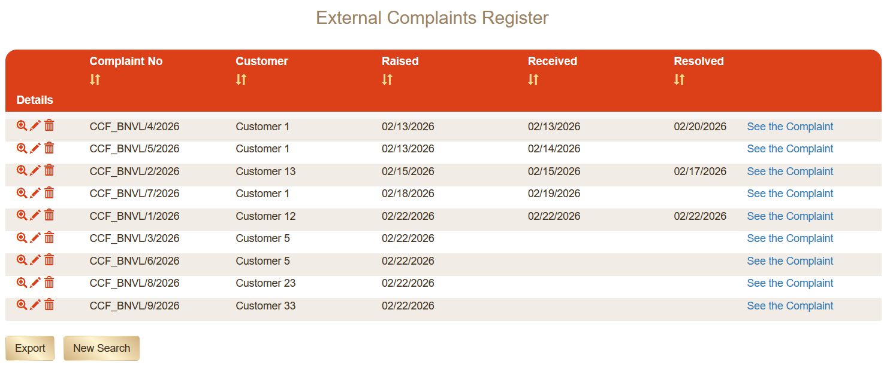
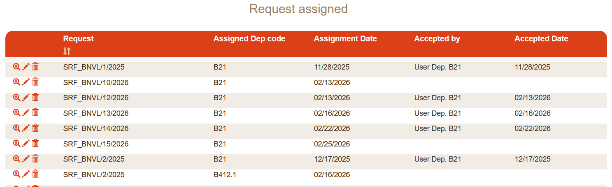
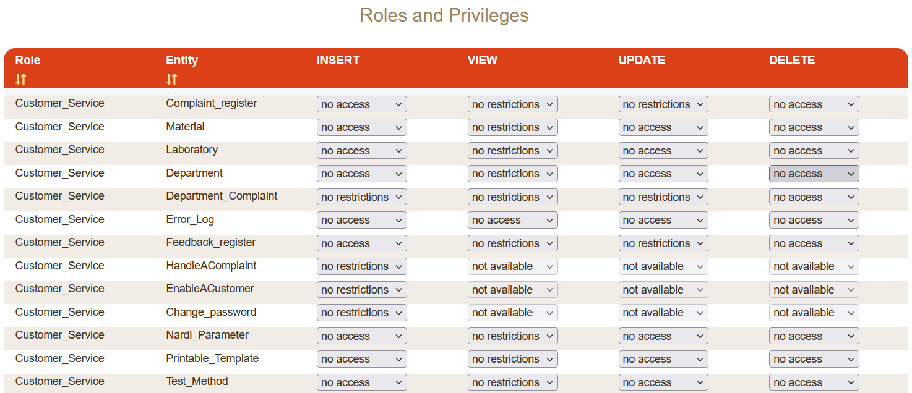

Industrial-Grade Management System — Engine Depth Validation
Context
This case represents the strongest enterprise-scale validation of the MySirt execution model in an institutional operational environment.
Institutional enterprise management system derived from a formal domain model, defined in the MySirt DSL as an instance of the execution meta-model, and executed by the Execution Engine. Currently deployed in a pre-production institutional environment, following a one-month structured training phase.
Structural Scope
- Multi-entity domain model across operational units
- Role-based access control with workflow orchestration
- Business rule enforcement embedded in the DSL
- Document generation and reporting templates
- Multi-database support (Oracle XE)
- Java 17 / Tomcat 9 execution stack
Structural Footprint
Declarative model size and structural composition of the NARDI management system.
Structural complexity is defined declaratively in the model and compiled into executable runtime artifacts.
Generative Evidence
Measured runtime footprint produced from the declarative model.
Runtime Generation Ratio
Customization is limited to environment configuration, branding alignment and targeted UI overrides. Core business logic and structural workflow remain model-driven.
Detailed DSL excerpts and regeneration traceability available upon formal technical inquiry.
Productivity Impact
Observed amplification of development output derived from the execution meta-model.
Each unit of manual development produced a significantly larger executable system, concentrating human effort on domain-specific logic while the engine derived the remaining structure.

Structured entity search view generated from DSL-defined domain model.
Operational Validation
- One-month institutional training completed
- ~20 active participants during validation phase
- Multi-laboratory organizational structure
- Daily operational usage expected upon production release
Engine Stress Factor
The system underwent iterative structural refinement during training, allowing domain adjustments without manual code intervention. Workflow complexity and role orchestration were validated before production activation.

Department-level assignment workflow with traceable responsibility transitions.
Engine Validation Dimension
Demonstrates structural scalability, workflow depth, and institutional-grade domain modeling prior to production deployment.

Entity-level authorization matrix generated from DSL-defined access rules.
Key Point
An enterprise-scale operational system derived from a compact formal domain definition — refined iteratively without rewriting application code.